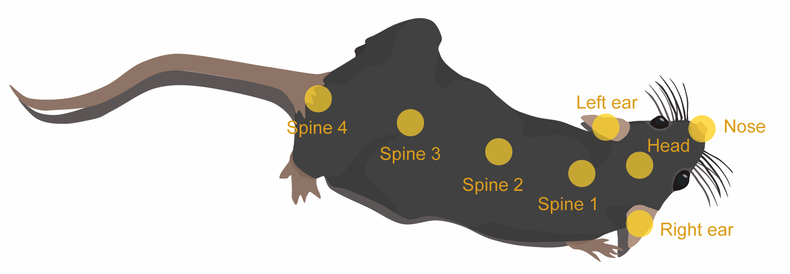

Hidden Markov Model analysis of mouse behavioural syntax#
In this example, we fit and apply a Hidden Markov Model (HMM) to infer behavioural syllables from pre-processed mouse tracking data.
The sample dataset is a two-hour snippet of a single mouse in a foraging assay. The mouse was tracked using SLEAP with key body parts annotated as follows:
{kind=link}
The data includes:
raw centroid positions (
x,y)Kalman-filtered estimates of centroid positions, speed, and acceleration (
smoothed_x,smoothed_y,smoothed_speed,smoothed_acceleration)pairwise distances between key body parts (
head-spine3,left_ear-spine3,right_ear-spine3,spine1-spine3)
These pairwise distances were selected based on their contribution to overall variance in body shape (i.e. length and curvature), as determined by applying Singular Value Decomposition (SVD) to a standardised distance matrix.
Set up environment#
Create and activate a virtual environment named hmm-example using uv.
uv venv hmm-example --python ">=3.11"
source hmm-example/bin/activate
Install the required ssm package and its dependencies.
uv pip install setuptools wheel numpy cython && uv pip install --no-build-isolation "git+https://github.com/lindermanlab/ssm#egg=ssm[plotting]"
Import libraries and define helper class#
import autograd.numpy as np
import autograd.numpy.random as npr
npr.seed(42)
import pandas as pd
import matplotlib.pyplot as plt
import pickle
import seaborn as sns
import ssm
class AeonHMM:
"""A class for training and analysing Hidden Markov Models (HMM) using the `ssm` library."""
def __init__(self, n_state):
"""Initialise AeonHMM with the number of hidden states."""
self.n_state = n_state # Number of hidden states
self.features = [
"smoothed_speed",
"smoothed_acceleration",
"head-spine3",
"left_ear-spine3",
"right_ear-spine3",
"spine1-spine3",
] # Expected features in the input data
self.model = None # HMM model instance
self.parameters = None # Sorted model parameters (mean, variance, covariance)
self.transition_mat = None # Sorted transition matrix
self.states = None # Inferred states
self.connectivity_mat = None # Connectivity matrix
self.test_lls = None # Log-likelihoods of the test data
self.train_lls = None # Log-likelihoods of the training data
def get_connectivity_matrix(self):
"""Compute the normalised connectivity matrix from the inferred states."""
connectivity_mat = np.zeros((self.n_state, self.n_state))
states = self.states
# Count transitions between states
for i in range(len(states) - 1):
if states[i + 1] != states[i]:
connectivity_mat[states[i]][states[i + 1]] += 1
# Normalise to sum to 1
for i in range(self.n_state):
total = np.sum(connectivity_mat[i])
if total > 0:
connectivity_mat[i] /= total
return connectivity_mat
def fit_model(self, train_data, num_iters=50):
"""Fit the HMM model to the training data using the EM algorithm."""
fitting_input = np.array(train_data)
self.model = ssm.HMM(
self.n_state, len(fitting_input[0]), observations="gaussian"
)
lls = self.model.fit(
fitting_input, method="em", num_iters=num_iters, init_method="kmeans"
)
self.train_lls = lls
def infer_states(self, test_data):
"""Infer states for the test data."""
obs = np.array(test_data)
self.test_lls = self.model.log_likelihood(obs)
self.states = self.model.most_likely_states(obs)
def sort(self, sort_idx):
"""Sort the model parameters, transition matrix, and inferred states based on the provided indices."""
# Sort Gaussian means: shape (n_features, n_state)
parameters_mean_sorted = self.model.observations.params[0][sort_idx].T
# Extract and sort variances: shape (n_features, n_state)
parameters_var = np.zeros((self.n_state, len(self.features)))
for i in range(self.n_state):
for j in range(len(self.features)):
# state i, feature j
parameters_var[i, j] = self.model.observations.params[1][i][j][j]
parameters_var_sorted = parameters_var[sort_idx].T
# Sort covariance matrices: shape (n_state, n_features, n_features)
parameters_covar_sorted = self.model.observations.params[1][sort_idx]
self.parameters = [
parameters_mean_sorted,
parameters_var_sorted,
parameters_covar_sorted,
]
# Sort transition matrix: shape (n_state, n_state)
self.transition_mat = (
self.model.transitions.transition_matrix[sort_idx].T[sort_idx].T
)
# Compute connectivity matrix
self.connectivity_mat = self.get_connectivity_matrix()
# Reassign state labels to reflect new order
new_values = np.empty_like(self.states)
for i, val in enumerate(sort_idx):
new_values[self.states == val] = i
self.states = new_values
Load sample data#
The sample dataset can be downloaded here.
Please change the value of file_path to the location where you saved the file.
file_path = "/path/to/hmm_example_mouse_pos.pkl"
with open(file_path, "rb") as file:
mouse_pos = pickle.load(file)
# Select only the required features for the HMM
mouse_pos = mouse_pos[
[
"smoothed_speed",
"smoothed_acceleration",
"head-spine3",
"spine1-spine3",
"left_ear-spine3",
"right_ear-spine3",
]
]
mouse_pos.head()
| smoothed_speed | smoothed_acceleration | head-spine3 | spine1-spine3 | left_ear-spine3 | right_ear-spine3 | |
|---|---|---|---|---|---|---|
| 2024-02-01 07:00:00.080 | 6.765046 | 19.325969 | 17.767353 | 12.744590 | 17.301722 | 15.257318 |
| 2024-02-01 07:00:00.180 | 8.032855 | 13.389354 | 17.269546 | 12.521794 | 18.267784 | 15.036750 |
| 2024-02-01 07:00:00.280 | 8.410684 | 7.612856 | 18.342884 | 12.943109 | 18.868068 | 15.568200 |
| 2024-02-01 07:00:00.380 | 7.863123 | 9.032341 | 18.010769 | 12.811849 | 18.209636 | 14.367178 |
| 2024-02-01 07:00:00.480 | 6.422148 | 15.558013 | 18.457386 | 12.783098 | 18.527658 | 15.594391 |
Training and inference#
In this two-hour example, we use the data in the first hour to train the model, and use the model to infer the hidden states of the mouse in the second hour.
start = mouse_pos.index[0]
train_mouse_pos = mouse_pos[start : start + pd.Timedelta("1h")]
test_mouse_pos = mouse_pos[start + pd.Timedelta("1h") : start + pd.Timedelta("2h")]
We initialise the model with 10 hidden states and train it using the Expectation-Maximisation (EM) algorithm over 50 iterations on the 6 selected features:
smoothed centroid speed,
smoothed acceleration
distance between
headandspine3distance between
spine1andspine3distance between
left_earandspine3distance between
right_earandspine3
We then use the trained model to infer the hidden states of the mouse in the test data (the second hour).
mouse_hmm = AeonHMM(n_state=10)
mouse_hmm.fit_model(train_mouse_pos) # Set `num_iters` as needed
mouse_hmm.infer_states(test_mouse_pos)
Parameter sorting#
To make it easier to interpret the model, we can sort the inferred states by the mean centroid speed (smoothed_speed) in ascending order.
The model parameters, transition matrix, and inferred states can then be reordered using AeonHmm.sort(), such that state 0 corresponds to the slowest, state 1 to the next slowest, and so on.
state_mean_speed = mouse_hmm.model.observations.params[0].T[0]
sort_idx = np.argsort(state_mean_speed, -1)
mouse_hmm.sort(sort_idx)
Visualise inferred states#
Below we colour-code the inferred states and plot these over time.
fig, ax = plt.subplots(figsize=(14, 3))
# Plot the state color bars
states_colored = mouse_hmm.states.reshape(1, -1)
im = ax.imshow(
states_colored,
aspect="auto",
vmin=0,
vmax=mouse_hmm.n_state - 1,
extent=[0, len(mouse_hmm.states), 0, 0.2],
)
ax.set_xlim(0, len(mouse_hmm.states))
ax.set_yticks([])
ax.set_xlabel("Time (frame index)")
ax.set_title("Hidden states over time")
# Add colorbar with state labels
cbar = plt.colorbar(im, ax=ax, orientation="horizontal", pad=0.2, shrink=0.8)
cbar.set_label("State")
cbar.set_ticks(range(mouse_hmm.n_state))
cbar.set_ticklabels([f"$S_{i + 1}$" for i in range(mouse_hmm.n_state)])
plt.show()
We can also visualise how key behavioural features differ across the 10 hidden states by plotting the mean and 95% confidence interval for each state, as estimated from the training data.
# Define feature labels
features = ["Speed (m/s)", "Acceleration (m/s$^2$)", "Body length (mm)"]
scale = 2e-3 # Scale for speed and acceleration
n_features = len(features)
n_state = mouse_hmm.n_state
params = mouse_hmm.parameters
fig, axs = plt.subplots(n_features, 1, figsize=(6, 12))
for i in range(n_features):
if i > 1:
scale = 2 # Body length is in mm, no scaling needed
axs[i].bar(
range(n_state),
params[0][i] * scale,
yerr=1.65 * (params[1][i] ** 0.5) * scale, # 95% CI = ±1.65*std
capsize=8, # Size of error bar caps
)
axs[i].set_xticks(range(0, n_state), [str(j + 1) for j in range(n_state)])
axs[i].set_ylabel(features[i])
axs[2].set_xlabel("State")
plt.tight_layout()
plt.show()
The transition matrix can be visualised as a heatmap, where the diagonal entries indicate the probability of remaining in the same state, while off-diagonal entries represent transitions between different states.
matrix = mouse_hmm.transition_mat
annot_array = np.array([[round(item, 3) for item in row] for row in matrix])
labels = ["$S_{" + str(i + 1) + "}$" for i in range(len(matrix))]
fig, ax = plt.subplots(figsize=(8, 6))
sns.heatmap(
matrix,
cmap="RdBu",
ax=ax,
square="True",
cbar=True,
annot=annot_array,
)
ax.set_title("Transition Matrix")
ax.set_xticklabels(labels)
ax.set_yticklabels(labels, rotation=0)
plt.tight_layout()
plt.show()